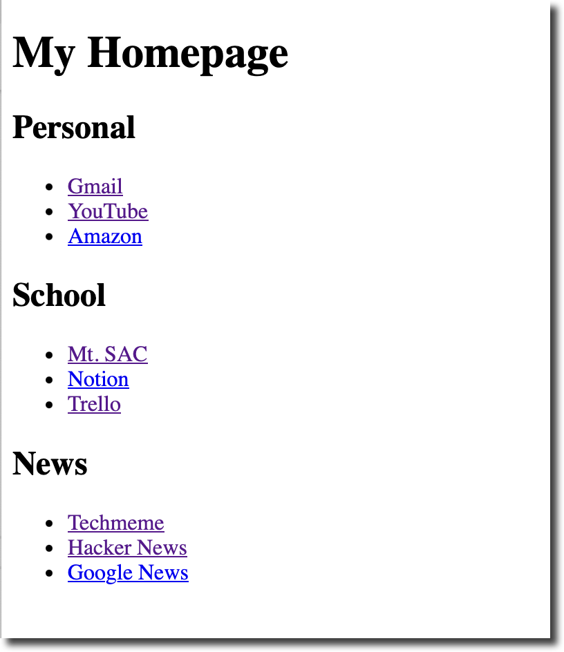
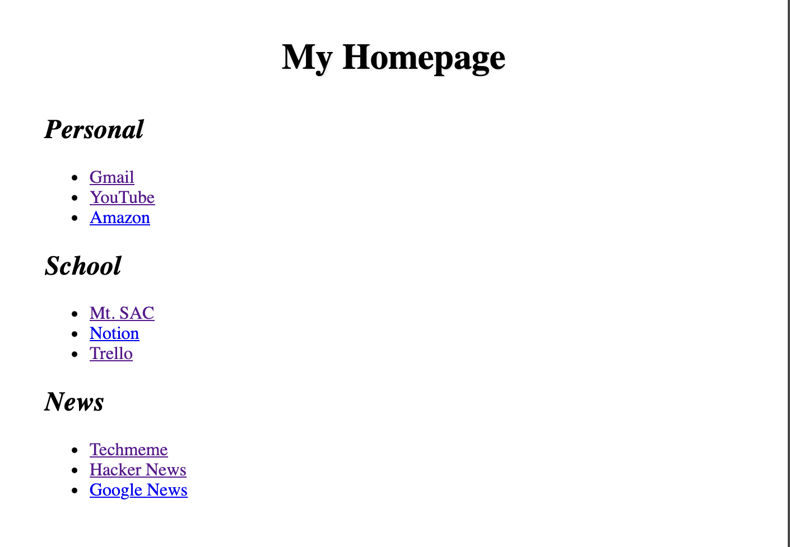
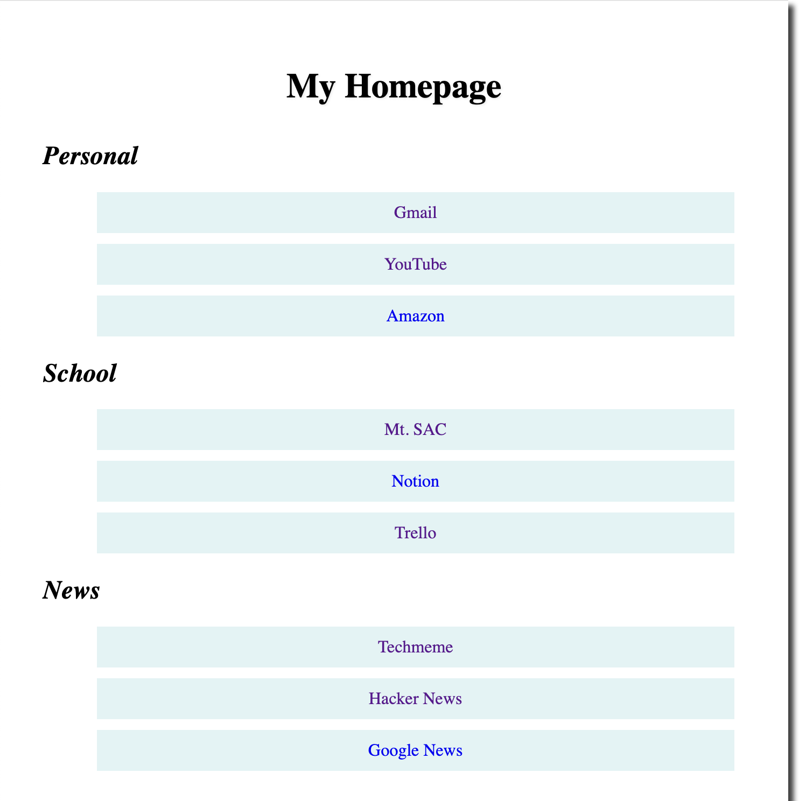

Objectives
Create a web page of useful personalized links that will open as your browser homepage.
Tools Needed
You will need a code editor and a web browser.
Setting up a custom home page can improve your productivity and browsing experience. It can be a centralized dashboard for your digital life. You can add your most important links, your most visited sites, sites you don’t want to forget the URL to, and even link to local files on your computer.
Create a working folder named homepage.
Create a basic html file named homepage.html in your working folder.
Create a blank styles.css file in your working folder.
Update the title of homepage.html to be My Homepage.
Update the h1 to be My Homepage.
Create three h2 elements: Personal, School, News.
We are going to use unordered lists (ul) to display our list items. Later we will use CSS to customize the look and feel of our homepage.
HTML <ul> (unordered list) elements create
bulleted lists in web pages. Each list item is wrapped in
<li> tags and appears with a bullet point (•) by
default. For example:
<ul><li>First item</li><li>Second item</li></ul>
renders as a bulleted list. They’re commonly used for navigation
menus, feature lists, or any content that needs visual separation
without implying order, and can be styled with CSS to change bullet
appearance or layout.
Let’s start with some generic personal links. You should modify these to be your own.
<ul>
<li>Gmail</li>
<li>YouTube</li>
<li>Spotify</li>
<li>Amazon</li>
<li>Discord</li>
</ul>
Anchor tags (<a>) are HTML
elements used to create clickable links on web pages. The
href attribute specifies the destination.
<a href="contact.html">Contact Us</a>
creates an internal link, while
<a href="https://mtsac.edu/cis">CIS Department</a>
links to an external site.
Additional attributes like target="_blank" open
links in new tabs, and title="Description" provide
hover tooltips for better user experience.
We will wrap the text inside each li with an anchor tag to the website that opens in a new tab.
<li>
<a href="https://mail.google.com/mail/u/0/#inbox" target="_blank">Gmail</a>
</li>
Do this for each of your links. Navigate to the site and copy the URL from the bar. Follow the same format for each item on your list.
Add a list and links for the School and News categories.
Add websites that you already know and use. Here are some suggestions:
You will have a useful, but plain looking, homepage.

Open styles.css.
We’ll set a few basic styles to make the page look decent. We will also adjust the li to remove the bullet points and remove the underline from the anchor tags
Center the webpage on the browser and center the the h1. We’ll give it a cool text shadow. Let’s make the h2 italic as well.
body {
max-width: 800px;
margin: 0 auto;
padding: 40px;
}
h1 {
font-size: 2rem;
margin-bottom: 2rem;
text-align: center;
text-shadow: 1px 1px 2px rgba(0,0,0,0.1);
}
h2 {
font-style: italic;
}

Let’s make the lists and links look better. We’ll make them bigger and easier to click on. We will add some space around them and give them a subtle background color.
ul {
list-style: none;
}
li {
padding: 10px;
margin: 10px;
background-color:rgba(187, 225, 226, 0.404);
text-align: center;
}
li a {
display: block;
text-decoration: none;
}
li a:hover {
text-decoration: underline;
}

Move the homepage folder to your home directory or somewhere that your browser can access it.
Open homepage.html in your favorite browser and set that as the homepage to open when you open a new window.
What about other computers?
The custom homepage is a file on your computer. In order to use this on other computers you can put the project folder in a sync folder. Then it will update on your laptop, desktop, and other computers that you use.
What about on my phone?
You will need to put your page online for your phone to automatically use it. Consider hosting with github pages, amazon s3, cloudflare, etc.
Find the .html file you just created. Right-click on
it, select “Open with,” and choose “Google Chrome.”
With the file open in Chrome, go to the address bar at the top and
copy the entire address. It will begin with file:///
followed by the full path to your file. For example:
file:///C:/Users/YourName/Documents/my_homepage.html
Click the three-dot menu icon in the top-right corner of Chrome, and then click “Settings.”
In the “Settings” menu, click on “On startup” from the left-hand menu.
Select the option that says “Open a specific page or set of pages.”
Click “Add a new page,” paste the file path you copied in Step 3 into the text box, and then click “Add.”
Now, when you open Chrome, it will automatically load your custom local webpage as the startup page.
Find the .html file you just created. Right-click on
it, select “Open with,” and choose “Firefox.”
With the file open in Firefox, go to the address bar at the top and
copy the entire address. It will begin with file:///
followed by the full path to your file. For example:
file:///C:/Users/YourName/Documents/my_homepage.html
Click the three-line “hamburger” menu icon in the top-right corner of Firefox, and then click “Settings.”
In the “Settings” tab, click on “Home” from the left-hand menu.
Under the “New Windows and Tabs” section, find the dropdown menu next to “Homepage and new windows” and select “Custom URLs…”.
In the text box that appears, paste the file path you copied in Step 3.
Firefox saves your changes automatically, so you can simply close the “Settings” tab.
Your custom local webpage will now open as the homepage whenever you launch a new Firefox window.
Try splitting your page into columns by adding a main tag around your bookmarks and defining the columns in css.
main {
column-count: 2;
column-gap: 20px;
}